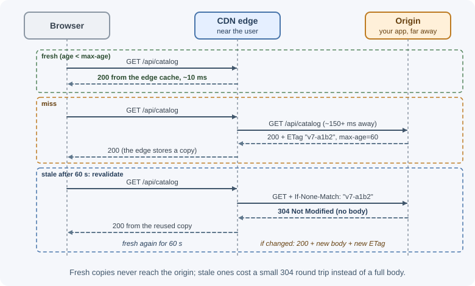
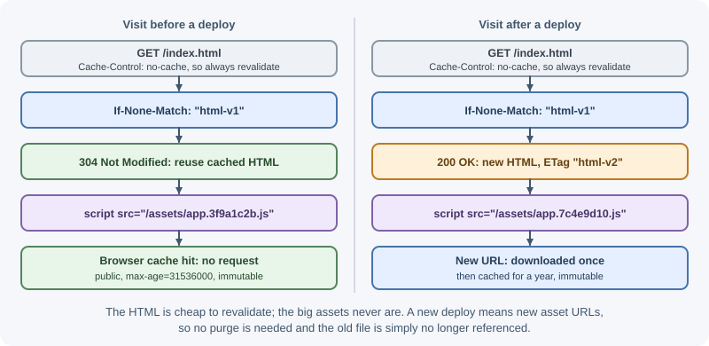

HTTP and CDN Caching¶
HTTP has caching built into the protocol. Browsers, reverse proxies, and content delivery networks (CDNs) can store responses and reuse them without contacting your servers, guided by headers your application sends. This lesson looks at HTTP caching from an architecture point of view: where responses are cached, how caches decide what is "the same request", how to change cached content safely, and how to avoid leaking private data.
Why it matters¶
The fastest request is the one that never reaches your servers. A CDN can serve static assets and public pages from an edge location a few milliseconds from the user, absorbing most traffic and traffic spikes. But HTTP caches are outside your application's direct control: once a response is stored in thousands of browsers or edge servers, you cannot easily take it back. One wrong header can make a fix invisible for days, or serve one user's account page to everyone.
Real-world usage¶
- Cloudflare caches by file extension, not content type. Cloudflare's default cache behavior page states that it caches based on file extension rather than MIME type and does not cache HTML or JSON by default. API responses and pages are therefore not cached at the edge unless you add rules.
- Cloudflare documents web cache deception. Its
Cache Deception Armor
page describes a personalized page that the origin also serves at
/newsfeed/foo.jpg: because the path ends in.jpg, the CDN caches it, and the attacker then receives the victim's cached content. Cloudflare offers a cache rule that protects against this. - Amazon CloudFront makes the cache key explicit. A CloudFront cache policy specifies which headers, cookies, and query strings are included in the cache key, which determines whether a request is a cache hit.
- CDNs purge by tag. Fastly's
Surrogate-Keyheader and Cloudflare'sCache-Tagheader both let you purge every object with a given tag in one request.
Popular providers: Cloudflare, Amazon CloudFront, Fastly, Akamai, and Google Cloud CDN; reverse-proxy caches such as Nginx and Varnish.
How it works¶
Private and shared caches¶
User A browser cache ─┐ ┌─> origin (your app)
(private: only A) ├─> CDN edge cache ─> reverse proxy ┤
User B browser cache ─┘ (shared: all (shared) └─> database
(private: only B) users nearby)
| Cache | Shared? | Controlled by | Can store personalized responses? |
|---|---|---|---|
| Browser (private) cache | No, one user | Cache-Control from the origin |
Yes, if allowed (private) |
| CDN edge cache | Yes | Cache-Control, s-maxage, CDN rules |
Only if the cache key separates users (usually avoid) |
| Reverse proxy cache | Yes | Proxy configuration and headers | Same as CDN |
HTTP caching rules are defined in RFC 9111.
Cache-Control recap¶
The Cache-Control response header tells caches whether and how long
they may store a response. The directives are explained in detail in
HTTP headers;
the ones that matter most for architecture are:
| Directive | Effect |
|---|---|
max-age=N |
Fresh for N seconds in any cache |
s-maxage=N |
Overrides max-age for shared caches (CDN, proxy) only |
public |
Shared caches may store it, even in some cases they otherwise would not |
private |
Only the user's browser may store it |
no-cache |
May be stored, but must be revalidated with the origin before each use |
no-store |
Must not be stored anywhere |
immutable |
The content will never change while fresh; skip revalidation |
stale-while-revalidate=N |
May serve stale for N seconds while revalidating in the background |
stale-if-error=N |
May serve stale for N seconds if the origin errors |
Some CDNs also honor CDN-Cache-Control (RFC 9213), which targets CDN
caches separately from browsers.
Freshness and validation¶
A cached response is fresh until its age exceeds max-age; fresh
responses are served without contacting the origin. A stale response
can be revalidated: the cache asks the origin whether its copy is
still current.
First request:
200 OK
ETag: "v7-a1b2"
Last-Modified: Thu, 05 Nov 2026 10:00:00 GMT
Cache-Control: max-age=60
After 60 s (stale), the cache revalidates:
GET /api/catalog
If-None-Match: "v7-a1b2"
If-Modified-Since: Thu, 05 Nov 2026 10:00:00 GMT
Origin, if unchanged:
304 Not Modified (no body; the cache reuses its copy for another 60 s)
Origin, if changed:
200 OK + new body + new ETag
ETagis an identifier for a specific version of the content. Strong ETags mean byte-identical; weak ETags (W/"...") mean semantically equivalent.Last-Modifiedis a timestamp; less precise (one-second resolution) but easy to produce.- A
304still costs a round trip, but saves bandwidth and often origin work.
The same rules at a CDN edge, for a fresh hit, a miss, and a stale copy:

CDN edge caching¶
A CDN runs servers in many locations (points of presence). DNS or anycast routing sends each user to a nearby edge, which serves cached responses or fetches from your origin on a miss. See CDN for how CDNs work as infrastructure.
User (Mumbai) ──> Mumbai edge ── hit ──> response in ~10 ms
│ miss
└──> (origin shield) ──> origin in another region (~150+ ms)
An origin shield (a mid-tier cache) makes edge misses go through one regional cache first, so a popular new object is fetched from the origin once rather than once per edge location.
Cache keys¶
A shared cache decides whether two requests are "the same" by their cache key. By default this is usually the method, host, and full URL including the query string. CDNs let you customize it.
| Key component | Include it when | Danger if mishandled |
|---|---|---|
| Path | Always | — |
| Query string | It changes the response (?page=2) |
Including tracking parameters (utm_*) fragments the cache; excluding real ones serves wrong data |
Specific headers (Accept-Language) |
The response varies by it | Including high-variety headers (User-Agent) destroys the hit ratio |
| Cookies | Almost never on shared caches | Keying on session cookies means one entry per user; ignoring them on personalized pages leaks data |
| Device class, country | The content differs | Too many variants |
The Vary response header tells caches which request headers the
response depends on, for example Vary: Accept-Encoding, Accept-Language.
Caches then store one variant per value of those headers. Vary: Cookie
or Vary: Authorization effectively makes a response uncacheable for
shared caches in practice.
Purging and invalidation¶
When content changes, you can:
| Method | How | Notes |
|---|---|---|
| Wait for expiry | Short s-maxage |
Simple; staleness bounded by the TTL |
| Purge by URL | CDN API call for specific URLs | Must know every affected URL and variant |
| Purge by tag (surrogate key) | Responses carry tags; purge all with a tag | Ideal for "product 42 changed" across many pages; support varies by CDN and plan |
| Purge everything | Clear the whole cache | Causes an origin load spike (an avalanche) |
| Change the URL | Versioned filenames | No purge needed; best for assets |
Purges propagate to edge locations quickly but not instantly, and they
cannot reach browser caches. Anything a browser has cached with a long
max-age stays there until it expires.
Versioned assets and immutable¶
Build tools put a content hash in asset filenames. The file at a given URL never changes, so it can be cached for a year; a new deploy produces new URLs.
index.html Cache-Control: no-cache (always revalidate)
<script src="/assets/app.3f9a1c2b.js">
/assets/app.3f9a1c2b.js Cache-Control: public, max-age=31536000, immutable
/assets/logo.8d21e0aa.svg Cache-Control: public, max-age=31536000, immutable
The HTML is revalidated on every visit so users pick up new asset URLs right after a deploy, while the large assets are served from cache.

Caching API responses at the edge¶
Public, non-personalized API responses can also be cached at the edge:
GET /api/v1/products?category=books&page=1
Cache-Control: public, s-maxage=60, max-age=0, stale-while-revalidate=300
s-maxage=60: the CDN serves it for 60 seconds.max-age=0: browsers revalidate each time, so the CDN controls freshness and purges take effect for users.stale-while-revalidate=300: the CDN can answer instantly with a stale copy while refreshing.
Only GET and HEAD responses are normally cached. Never cache responses
that depend on who the user is.
The danger of caching private data¶
Shared caches that store personalized responses cause serious data leaks: user A's account page, cached at the edge, is served to user B.
Rules:
- Responses for signed-in users:
Cache-Control: private, no-store(or at leastprivate) unless you have deliberately designed per-user caching. - Never let shared caches store responses carrying
Set-Cookie. - Do not rely on the CDN "probably" not caching something; set explicit headers on every response.
- Beware web cache deception: a request such as
/account/profile.cssthat the app answers with the profile page, but the CDN caches because the path "looks static". Cache by explicit rules and content type, not file extension alone, and make the app return 404 for unexpected paths. - Beware cache poisoning: unkeyed inputs (for example an
X-Forwarded-Hostheader used to build links) that change the response can let an attacker store a malicious version for everyone.
When to use and when not to use¶
- CDN caching: use for static assets, public pages, and public, non-personalized API responses with many repeat readers. Do not use it for anything that depends on who the user is.
- Browser caching: use long
max-ageonly for versioned (hashed) URLs. Keep it short orno-cachefor HTML and API responses you might need to change quickly. no-store: use for sensitive data (account pages, tokens, financial or health records). Do not use it for public content; it throws away all caching benefits.- Purging: prefer versioned URLs for assets and tags for content shown on many pages. Avoid "purge everything" except in emergencies.
| Response | Cache-Control | Where it is cached | How changes reach users |
|---|---|---|---|
| Hashed static asset | public, max-age=31536000, immutable |
Browser and CDN | New URL on deploy |
| HTML entry page | no-cache |
Stored, revalidated each time | Revalidation (304/200) |
| Public API list | public, s-maxage=60, max-age=0, stale-while-revalidate=300 |
CDN | Expiry or tag purge |
| Signed-in user data | private, no-store |
Nowhere | Always fresh from the origin |
Practical examples¶
Setting cache headers in Express¶
import express from "express";
const app = express();
// Hashed build assets: cache for a year, never revalidate
app.use("/assets", express.static("dist/assets", {
immutable: true,
maxAge: "365d",
}));
// Public catalog API: CDN caches 60 s, browsers revalidate
app.get("/api/v1/products", async (req, res) => {
const products = await listProducts(req.query);
res.set("Cache-Control", "public, s-maxage=60, max-age=0, stale-while-revalidate=300");
res.json(products); // Express adds a weak ETag and answers 304 when it matches
});
// Personalized data: never stored by shared caches
app.get("/api/v1/me", authenticate, async (req, res) => {
res.set("Cache-Control", "private, no-store");
res.json(await getProfile(req.user.id));
});
Checking what a CDN did¶
curl -sI https://www.example.com/api/v1/products?page=1
# HTTP/2 200
# cache-control: public, s-maxage=60, max-age=0, stale-while-revalidate=300
# etag: W/"2f1-..."
# age: 37 <- seconds the response has been in a shared cache
The Age header shows the response came from a cache. Most CDNs also add
a vendor-specific header reporting HIT or MISS.
Best practices¶
- Send an explicit
Cache-Controlheader on every response. - Use hashed filenames with
immutablefor static assets, andno-cachefor HTML entry points. - Use
s-maxagefor CDN freshness and keep browsermax-ageshort for content you may need to purge. - Keep cache keys minimal but complete: drop tracking parameters, keep parameters that change the response.
- Mark personalized responses
privateorno-store. - Prefer tag-based purging for content that appears on many URLs.
- Use
stale-while-revalidateandstale-if-errorto improve latency and resilience.
In production¶
- A fix is deployed, but users still see the bug.
Detect: responses for the HTML or API carry a large
Ageand a longmax-age, and a purge did not help for returning visitors. Cause: long browser caching of content that changes. Fix:no-cachefor HTML, shortmax-agewiths-maxagefor APIs, and versioned asset URLs. - User A sees user B's account page.
Detect: CDN logs show cache hits on personalized URLs; the response
lacks
privateorno-store. Cause: a shared cache stored a personalized response, or web cache deception. Fix: mark personalized responsesprivate, no-store, return404for unexpected paths, purge, and enable the CDN's deception protection. - The CDN hit ratio is low.
Detect: CDN analytics show many distinct cache keys for the same page,
differing only by
utm_*or other tracking parameters. Cause: tracking parameters in the cache key. Fix: exclude them in the cache key policy and keep only parameters that change the response. - The origin is overloaded right after a purge. Detect: origin requests per second jump immediately after a "purge everything". Cause: every edge location misses at once. Fix: purge by URL or tag, and use an origin shield or tiered cache.
- Conditional requests never return
304in tests. Detect: a Node.jsfetch()withIf-None-Matchalways gets200, whilecurlgets304. Cause:fetch()addsCache-Control: no-cacheandPragma: no-cacheto such requests, and Express then treats the request as not fresh. Fix: test revalidation withcurlor thehttpmodule, not as a sign that ETags are broken.
Important terminology¶
- Private cache: A cache for one user, such as the browser cache.
- Shared cache: A cache serving many users, such as a CDN or proxy.
- Fresh / stale: Whether a cached response is within its allowed age.
- Revalidation: Asking the origin whether a stale copy is still valid
(
If-None-Match,If-Modified-Since). - ETag: An identifier for a specific version of a representation.
- Cache key: The request properties a cache uses to identify stored responses.
- Purge: Explicitly removing content from a CDN.
- Origin shield: A mid-tier cache between edge locations and the origin.
Common mistakes and misconceptions¶
- Setting a long
max-ageon HTML or API responses and being unable to roll out fixes. - Thinking a CDN purge also clears browsers; it does not.
- Caching personalized responses at the edge.
- Using
no-cachewhen you meanno-store;no-cachestill allows storage. - Including tracking query parameters in the cache key and getting a low hit ratio.
- Adding
Vary: User-Agent, which creates thousands of variants. - Purging everything after every deploy instead of versioning assets.
Revision questions¶
- What is the difference between a private and a shared cache, and which directives target each?
- Walk through a revalidation with
ETagandIf-None-Match. - Why do hashed asset filenames allow a one-year
max-age? - What should and should not be part of a CDN cache key?
- When would you use tag-based purging instead of URL purging?
- How can a CDN accidentally leak private data, and how do you prevent it?